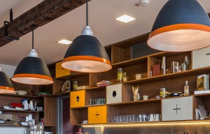

Home
About
The chefs
blog
contact
RESERVATIONS: 011 678 67856
MON - SAT 8.00 - SUNDAY CLOSED
connect with us
Home
About
The chefs
blog
contact
BLOG
New summer menus available from 12th Sept.

RECENT POSTS
Inside The Protein Bar
Biggest Volcano Timelapse
Josh Woodward
Madrids Photographer Maraton
Oscar Wilde
RECENT COMMENTS
Ray Quinones on Inspired by Italian Style
Ray Quinones on Recent Trends in StorytelliRay Quinones on Transitions In UX Design
Ray Quinones on Best Productivity Secrets
ARCHIVES
February 2016
CATEGORIES
Art
Business
Design
Music
Photography
Sport
META
Log in
Entries RSS
Comments RSS
WordPress.org